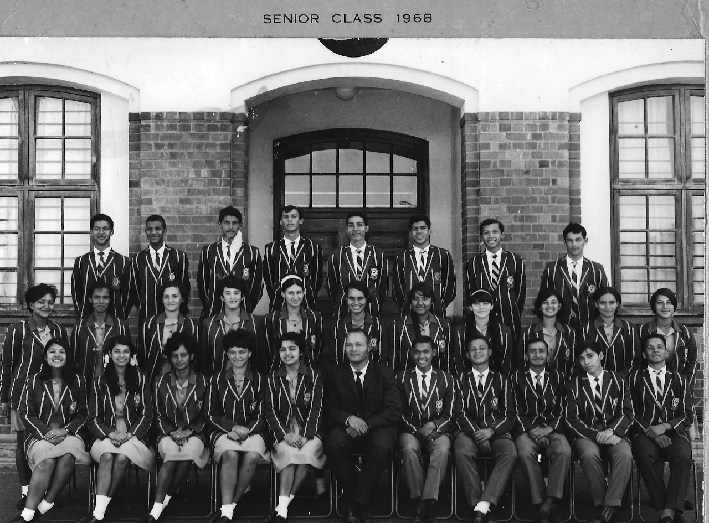
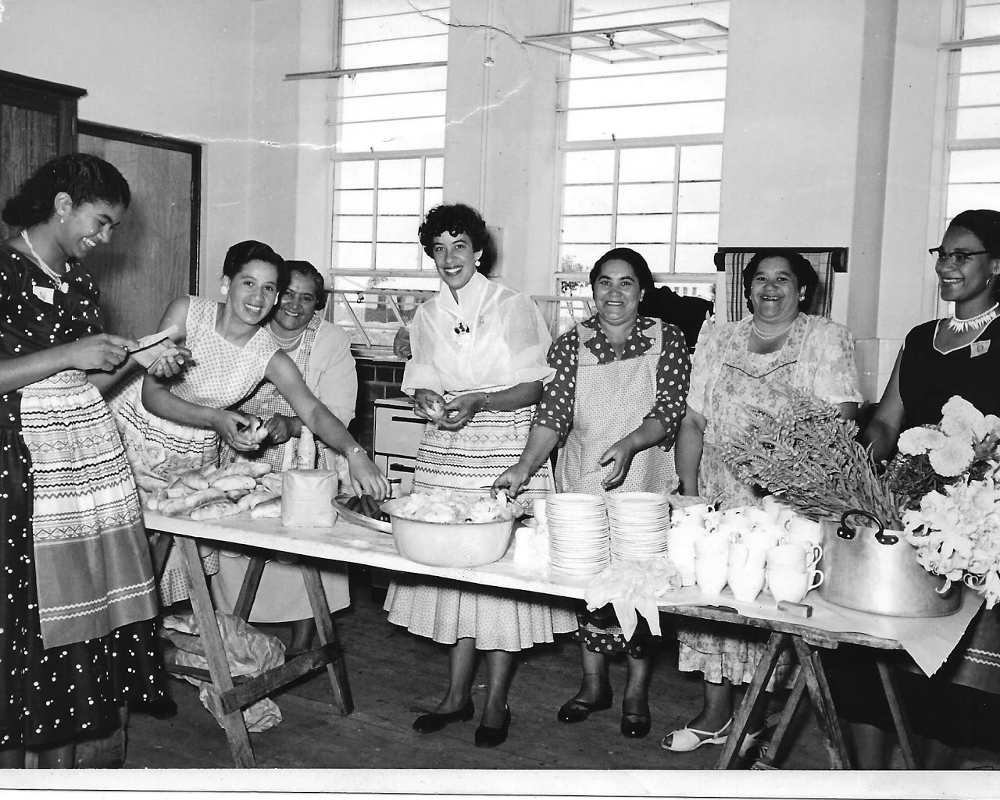

History

CLASS OF 1968: Back Row (l-r): Ingred Titus, Trevor de Bruin, Winston Coerecius, William Gentle, Bernard Levendal, Michael Titus, Padraig James, Cecil Whiteman. Middle Row (l-r): Marianne Richter, June Fredericks, Diana Volkwyn, Yolanda Smith, Daphne Williams, .Elaine Petersen, Zeenat Harneker, Charmaine Johnson, Hilary Callaghan, Elaine Kearns, Stephanie Diedericks. Front Row (l-r): Lynette Falken, Najma Waglay, Margaret Estherhuizen, Mercia Raaff, Zaida Begg, Mr J Bekkers (Mathematics & Physical Science), Abduragman Isaacs, Leslie Julius, Neville Lintnaar, Shaukat Karjeker, Glen Volmink. Absent: Richard Losper.

Background
2017 is a milestone year in the history of Athlone High as the school officially turned 70. The school which has been an impressive, august and institutional bulwark against educational oppression has crept into my heart. Athlone High has enchanted me with its rich history of academic excellence, cultural firsts and sporting successes. Significantly, its commitment to social justice has been unwavering. Protest action at Athlone High over the decades was a just action against an oppressive state system of education. Pedagogy in South Africa must be seen and understood in the context of Apartheid education, formulated through the Christian National Education policy document. Social justice through education has been a means to achieve political change in this country. “Struggle” is in our blood and is embedded in our DNA and collective consciousness.
If not for anything else, the one aspect of the 1976 revolt that made Athlone High School very different to any other Cape Flats High School is that it was a member of the South African Student Movement (SASM). In Brooks and Brickhill’s book, Whirlwind before the storm, it states: “The link with Athlone High, a Coloured school, was a significant portent of African-Coloured school student unity developing in SASM “ This fact about Athlone High gives me renewed hope of cementing unity amongst divided and fragmented communities in and around Cape Town. We need to reflect on student unity in 1976. This unity and bridge-building across the cultural “divide” was very courageous amidst the National Party’s obsession with racial classifications and separate departments of education. Our students of 1976 were ahead of their time as their thinking was unfettered and their action was in the spirit of Black Consciousness which was more than the amount of melanin in your skin. The ideals of the class of ‘76 we should cherish and hold dear as we seek to unite all oppressed peoples in this country in our endeavours for a permanent economic revolution. The majority of Athlonians supported the protest action of 1976, “prepared to sacrifice everything to assure a better and just future”.
The 1980 boycotts were characterized by their organizational structures. The students’ political astuteness and awareness were impressive. The schools’ boycotts were actually not boycotts as such but were very cleverly organized programmes of mass action including awareness meetings at schools. Protest action had begun quite early (in February) at schools in Hanover Park but then spread to other schools on the Cape Flats. By 21 April many other high schools had come out in support of a change in the educational and political system. School protest action was intersected with support for industrial strikes such as the one at Fattis and Monis.
This chapter’s contribution to the treatise on Athlone High must be understood in the context of the “winds of change” that were blowing in the country. My experiences at the school over almost 31 years have been memorable, enjoyable, challenging, humbling and rewarding.
The director of the Shakespeare Schools Festival, Kseniya Filinova, perhaps summed up the essence of Athlone High School when she commented that our drama group presented a “beautiful rendition” of Romeo and Juliet in May 2017. So in a different love context, our school’s history is a beautiful story. This chapter will focus on highlights of each year since my inaugural year, 1987 until the present one, 2017. These year by year highlights will attempt to draw out the significant events, changes and milestones that occurred as well as people’s interpretations of these happenings and the processes and background influences that shaped them.
Athlone High had made its mark and presence felt amongst the community, the rest of Cape Town, South Africa and abroad. I was captivated by the organizational structure, friendliness and professionalism of the staff and by the enthusiasm of the students.